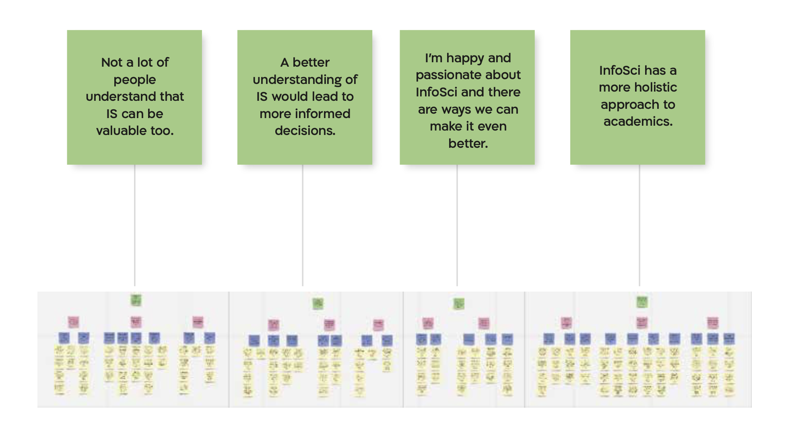

ischool identity
-

-
overview
The Information Science major at UMD's iSchool (College of Information Studies) has quickly grown in size to be the fourth largest major on campus. The rapid pace of that growth has created a massive student body with an ambiguous identity. Combined with the relative recency and interdisciplinary nature of the field, concisely marketing what exactly the program will offer has proved difficult. I was interested in discovering how InfoSci might differentiate itself from similar programs, allowing the iSchool to target otherwise confused or uninformed students who would be a good fit for the degree. With two new majors set to launch soon, the InfoSci major needs to have a solid foundation by eliminating existing misconceptions.
I, as part of a team, set out to research and unpack the several layers of this identity by conducting contextual interviews with six participants. The data from these interviews was analyzed and visualized using an affinity diagram, an identity model and a relationship model. I then came up potential design solutions that will help the InfoSci students in their school experience.client: UMD's iSchool (College of Information Studies)
when: Oct-Dec 2021
role: UX Researcher on a team of six
process: Planning, Interviews, Interpretation Sessions, Affinity Diagramming, Modelling, Ideation
tools: Miro
research questions

-
study design

target audience
interview structure
portfolio
The insights from the affinity diagram and the experience models are summarized in the portfolio below:
design solutionsWhile the project was less focused on designing an “end product”, I, with my team, identified some potential solutions for the problems experienced by the participants and their peers.